-

Project 3: Sequential Chips
Todo este proyecto se se realizó en base a nand2teris
Puedes descargar la carpeta con los resultados finales de esta parte del proyecto dando click aquí.
BIT
Visualización grafica del BIT
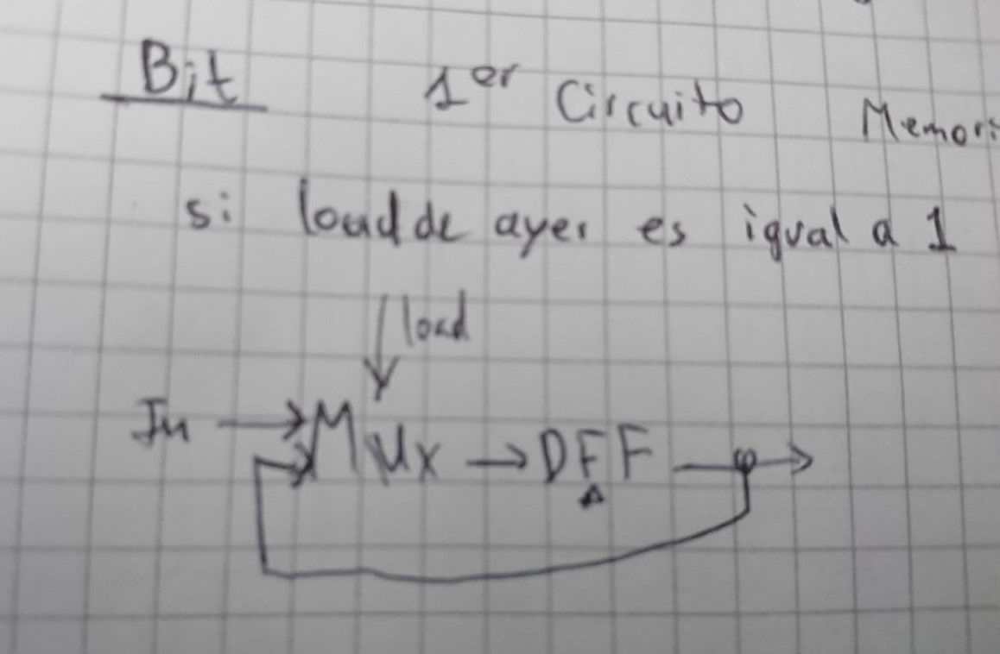Código con el que se solucionó el ejercicio
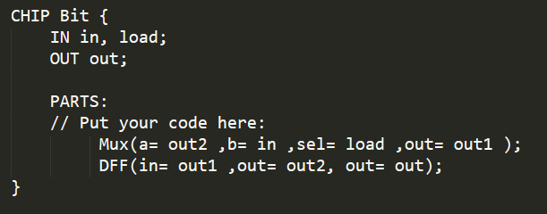El BIT nos permite guardar un bit en memoria.
REGISTER
Visualización grafica del REGISTER
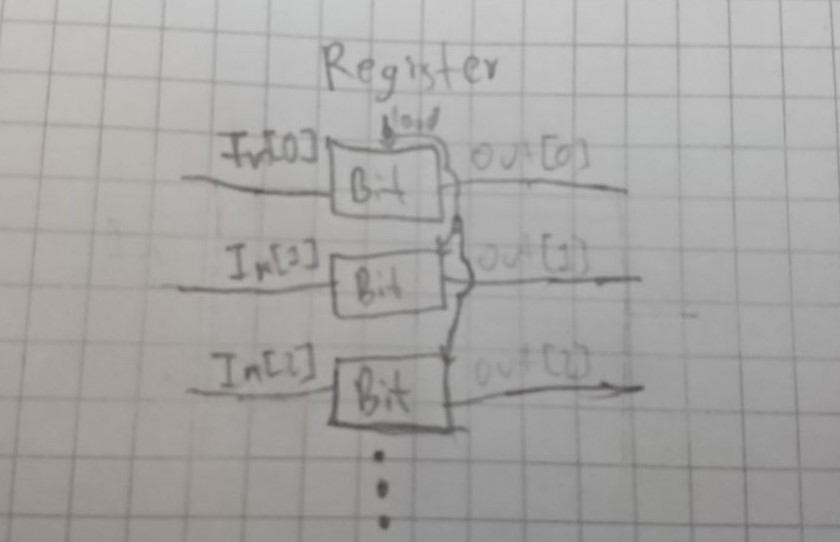Código con el que se solucionó el ejercicio
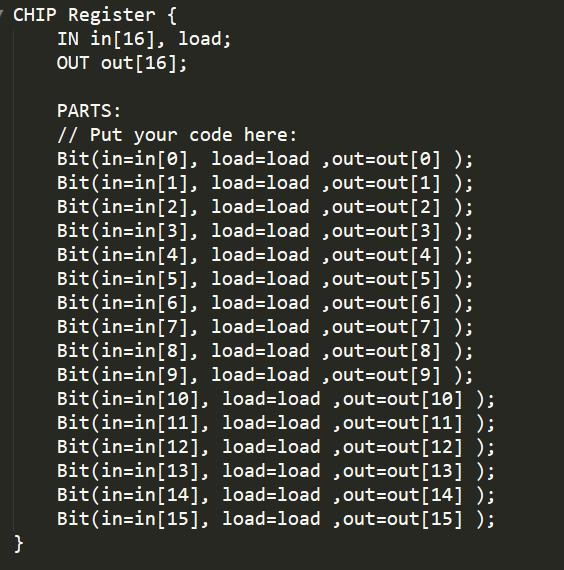El REGISTER es una cantidad de BIT conectados, que nos permiten almacenares varios bits en memoria.
RAM8
Para la RAM8 lo que hacemos es conectar con un DMUX8WAT16 el load y el register, este nos proporciona 8 datos, los cuales podemos almacenar en memoria por medio de unos REGISTER conectados a las direcciones de entrada. Como tendremos 8 outputs del REGISTER, lo que hacemos es que los conectamos a un MUX8WAY16 para optener una salida. De un modo muy similar duncionan las RAM64, la RAM512, la RAM4K y la RAM16K. Solo que para conectar estas lo unico que usamos es la cantidad de RAM menor a ella que acumule la cantidad de BIT necesarios. A continuación dejaré las dos primeras graficas para que comprendan como se hace el proceso.
Visualización grafica de la RAM8
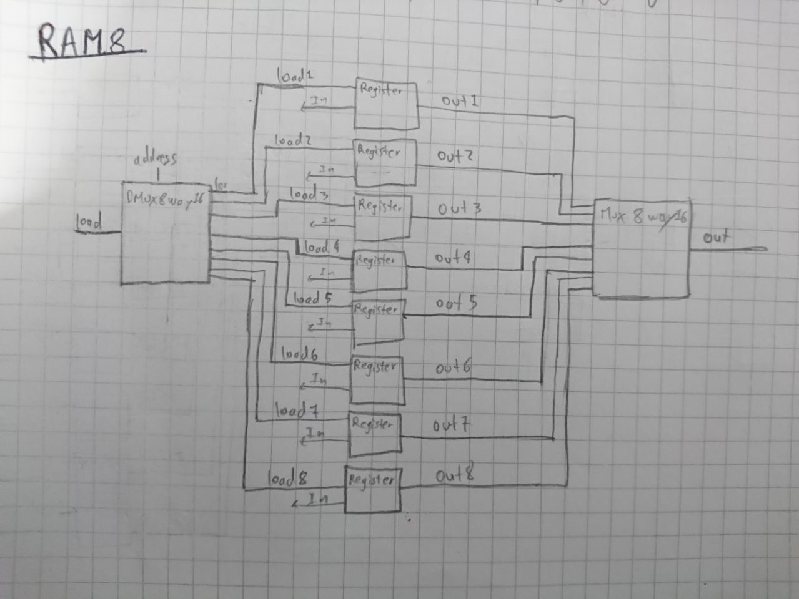Visualización grafica de la RAM64
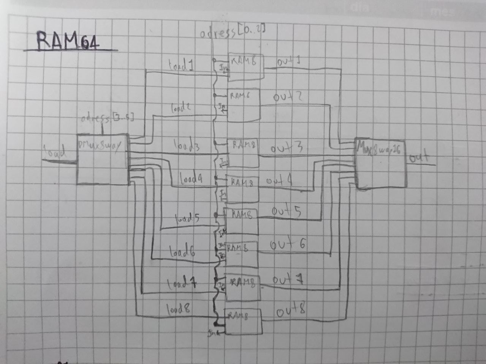Código con el que se solucionó la RAM8
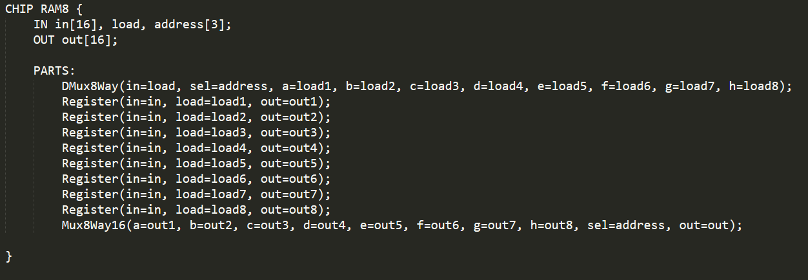Código con el que se solucionó la RAM64
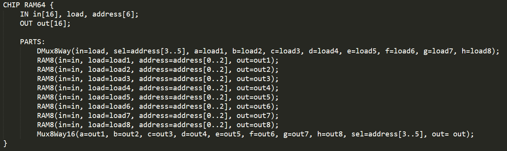Código con el que se solucionó la RAM512
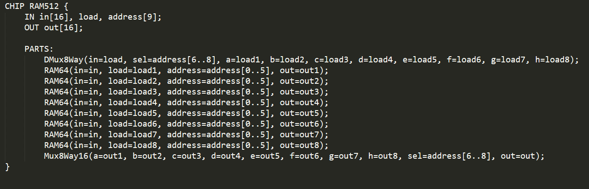Código con el que se solucionó la RAM4k
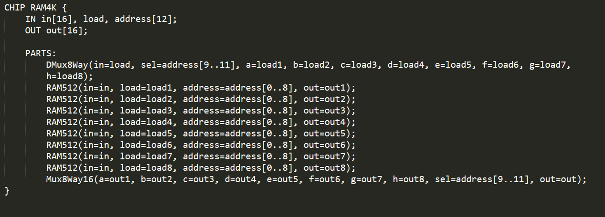Código con el que se solucionó la RAM16K
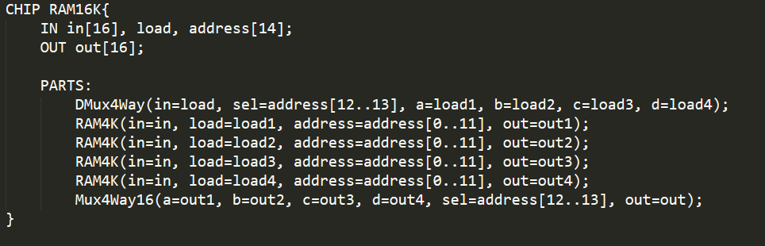PC
Visualización grafica de la PC
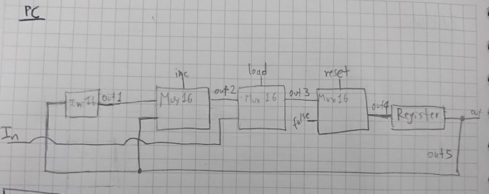Código con el que se solucionó el ejercicio
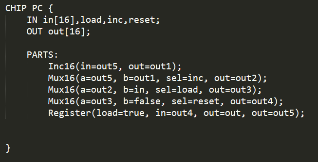Para PC podemos decir que este controla tres funciones: inc, load y reset. Con los cuales emite una dirección de 8 bits, se restablece a cero y se puede cargar con cualquier 1 de las posibles 256 direcciones.
LISTA DE CONCEPTOS.
1.
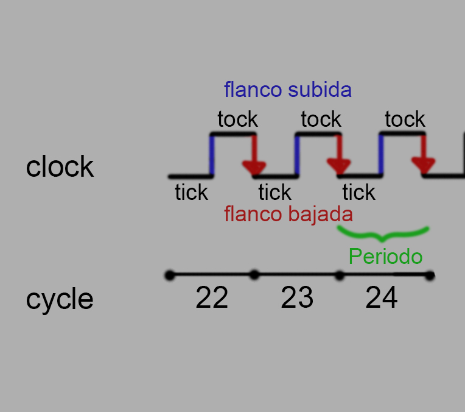Como pudimos apreciar en la imagen el el tick es cuando la señal del reloj es cero y el tock cuando es 1. El flanco de bajada se produce cuando la señal pasa del estado 1 al 0 y el flanco de subida cuando pasa del 0 al 1, el ciclo es el tiempo en que tarda desde el inicio de un tick hasta cuando finaliza el tock, el periodo es el tiempo que le toma a un ciclo terminarse y la frecuencia no la podemos ver en la imagen pero es la cantidad de ciclos que se pueden realizar en 1 segundo.
2.
FLIP FLOP
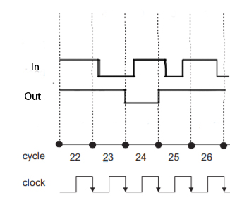BIT
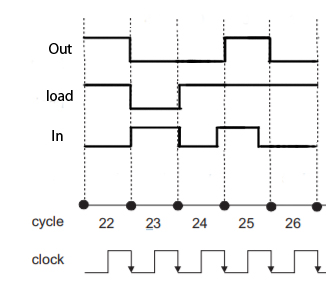REGISTER
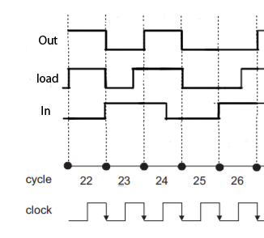RAM8
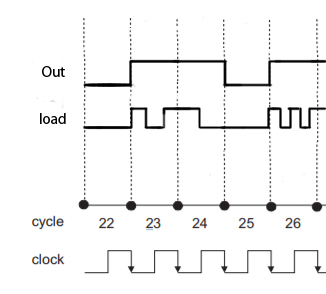3.
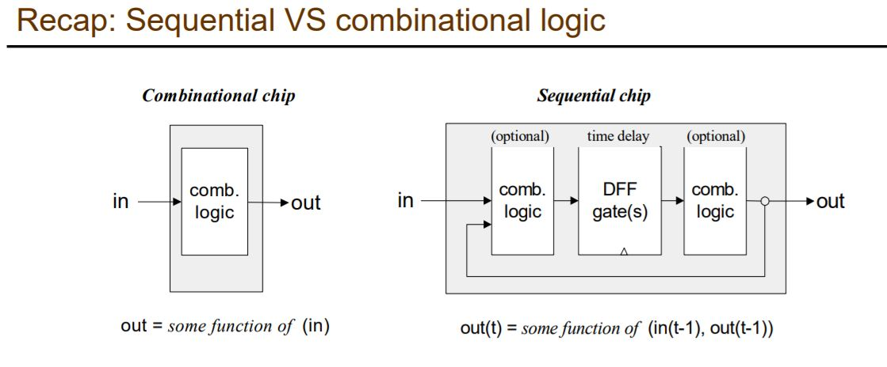La imagen que acabamosde apreciar nos permite darnos cuenta de que en un circuito combinacional la salida es función unica y exclisivamente se sus entradas ya que estas no poseen ningún tip ode realimentación, encambio el circuito secuencial se determina por sus entradas y por sus salidas, con lo que podríamos decir que tanto las salidas como las entradas en el tiempo anterior afectan las salidas del presente.
4. - Un circuito combinacional está formado por compuertas conectadas entre si cuya salida está en función de la entrada.
- Un circuito secuencial es capaz de tener salidas en función de su entrada y el tiempo.
-Los circuitos combinaciones son la base de los sistemas cómputo.
- En un circuito secuencial cualquier cambio en los valores de entrada se refleja (después de un intervalo de tiempo) en las salidas.
-Los circuitos combinaciones realizan operaciones como suma, resta, multiplicación y división
5.
a.Para mi la respuesta es negativa, ya que para cualquiera de esas dos operaciones que se haga con la RAM se siguen utilizandon los registros y se sigue teniendo en cuenta el reloj.
b. Un ejemplo sería, si tenemos un valor asignado en un registro y en el momento de hacer la lectura en un tiempo después, la salída será igual a el valor que tiene ese registro almacenado en el tiempo pasado.
6. La dirección en memoria es un registro encambio el contenido de esa dirección es el contenido almasenado dentro de esa dirección.
8. Supongamos que tenemos una memoria de 16 bits de Bus de Datos y cada registro en la memoria de 12 bits. Si tenemos un bus de Datos de 16 bits, entonces tenemos 2Bites que sería el ancho de Bus de datos. Ahora, la capacidad de la memoria simplemente se consigue multiplicando el ancho de bus de datos con el registro en la memoria.
así que nuestra formula queda así: Capacidad de Memoria = Ancho de Bus de datos x Espacio de registro en la memoria. Y adecuando esta formula a nuestros datos, podemos decir que:
capacidad = 2^n * m
9. Al cambiar el bit de load en un registro no se evidencia inmediatamente en la salida debido a que el cambio se realiza con un cambio proporcionado por un flanco de tiempo, es posible que se haya hecho un cambio en el bit mientras no ocurria ningún flanco de tiempo y haya podido haber regresado al estado anterior, lo que no permitira ver ningun cambio, ya que se lepuede estar pasando el mismo valor, y por otro lado hay que tener en cuenta que si el cambio en el bit de load se realizo en cierto instante de tiempo, hay que esperar hasata que ocurra el flanco para que se pueda notar algún cambio.
10. este es un registro del procesador de un computador, el cual indica la posición en donde está el procesador en su secuencia de instrucciones. Dependiendo del computador el PC puede estar conteniendo la instrucción que es ejecutada o la dirección de la próxima instrucción a ser ejecutada.
RETO.
El retardo de propagación es muy importante porque es el tiempo que limita la frecuencia máxima a la que es posible trabajar.
a.Los retardos generan que regulan la velocidad a la que se pueden procesar los datos. La reducción de los retardos de propagación en circuitos digitales permite procesar datos a una velocidad más rápida y mejor el rendimiento general.
b. Para el funcionamiento en un circuito secuencial lo más combeniente es que este retardo se adecue a cada ciclo.
Puedes descargar la lista de chequeo dando click aquí.
Puedes descargar la AutoEvaluación dando click aquí.